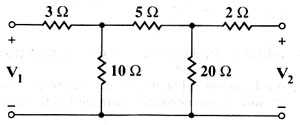

C01 DC analysis: Find Y parameters of resistive net
Question. Find the y11 and y12 parameters of the following net.

Solution:
There are different ways to solve this problem using Symbulator. I'll present here the easiest way, using one of the latest tools of Symbulator: port().
1) Label nodes and elements. Define a variable as a matrix containing circuit description. I used this description:
"r3,1,3,3.; r10,3,0,10.; r5,3,4,5.; r20,4,0,20.; r2,2,4,2." àcir
2) Run the ports tools, specifying the terminal nodes, which
are 1 and 2.
sq\port(cir,1,2)
Now the program displays a dialog box, in which you have to specify the desired parameters (which you set to y), give a name to the parameters (p is a good name) and specify the analysis you want to perform (in this case DC). When done, press Enter. The process is complex, so you have to wait some time. After a while, the calculator displays...
Done
3) Since your parameters are y and their name is p, the answers are stored in the following variables: yp11, yp12, yp21 and yp22. They are also shown in screen. Suppose you want to retrieve them after they've been displayed in screen. You can ask for them.
yp11
0.1418
yp12
-0.0766
Answer: The parameters obtained are the right ones.